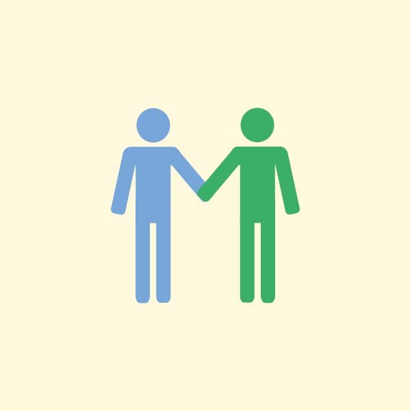

Hvorfor Sorggruppe?
Hvert år mister omkring 700 børn og unge på Fyn en far eller mor. Mere end to ud af tre børn taler aldrig eller sjældent med andre om hvordan de har det.
Når man mister en nærtstående person, har man behov for støtte, da det kan være svært at rumme følelser og tanker som følge af sorgen. Undersøgelse af sorggrupper viser, at det er fællesskabet blandt børnene og de unge, som er den bedste hjælp til at komme videre i tilværelsen.
Børnene i gruppen opnår bedre forståelse for deres egen og andres sorg og sorgreaktioner, og de oplever at det kan lade sig gøre at komme videre i livet på trods af smerten ved at have mistet.
Tilmelding af Sorggruppe
Kender du nogen mellem 10 og 18 år, som har mistet og har brug for støtte? – så ring eller skriv til os via kontaktsiden og tal med én af gruppelederne.
-
1. Ring eller skriv til os og tal med en af gruppelederne.
-
2. Du vil herefter blive indbudt til en forsamtale med to af lederne.
-
3. Efterfølgende bliver du skrevet op til deltagelse i den førstkommende gruppe.
-

4. Sorggruppen mødes på Bülowsvej 11-13, Odense M, hvor Thomas Kingos Kirke har været så venlig at stille to lokaler til rådighed for gruppen.